Core knowledge toolbox
Study guide v2, Part A
How the eight questions connect
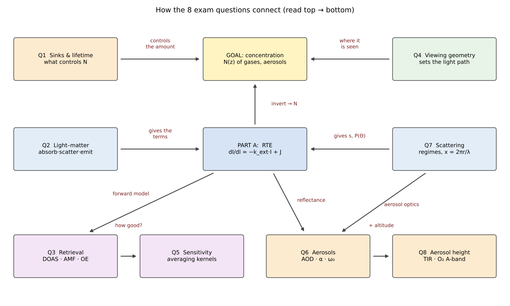
Figure 12 (study guide v2): concept map of the eight questions and Part A.
A.1 The radiative transfer equation
Lecture notationdI(ν̃)/dl = − kext(ν̃) · I(ν̃) + J(ν̃)
kext = αgas + sgas + αaer + saer
- I spectral radiance along the path
- kext extinction = absorption + scattering
- J source function: photons added to the line of sight
- α, s absorption and scattering coefficients
Lecture photo: RTE (1/5)
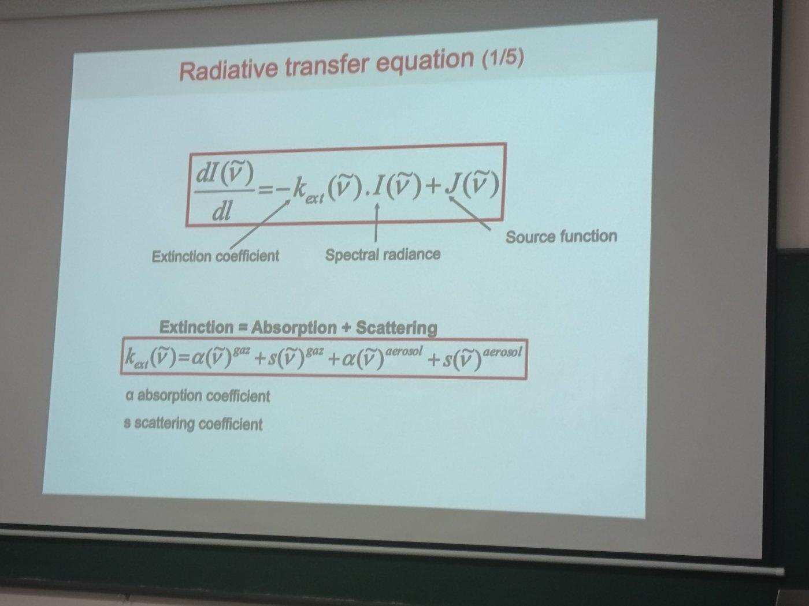
Lecture slide: extinction = absorption + scattering, for gases and aerosols.
A.2 Photon budget: gains and losses
| Process | Gain / loss | RTE term |
|---|---|---|
| Surface reflection into the line of sight | Gain | boundary (1 − εs)·Is |
| Single scattering in | Gain | J (scattering part) |
| Multiple scattering | Gain | J (iterated) |
| Thermal emission | Gain | J = α·B(T) |
| Absorption | Loss | −α·I |
| Scattering out of the field of view | Loss | −s·I |
Gains and losses in one figure
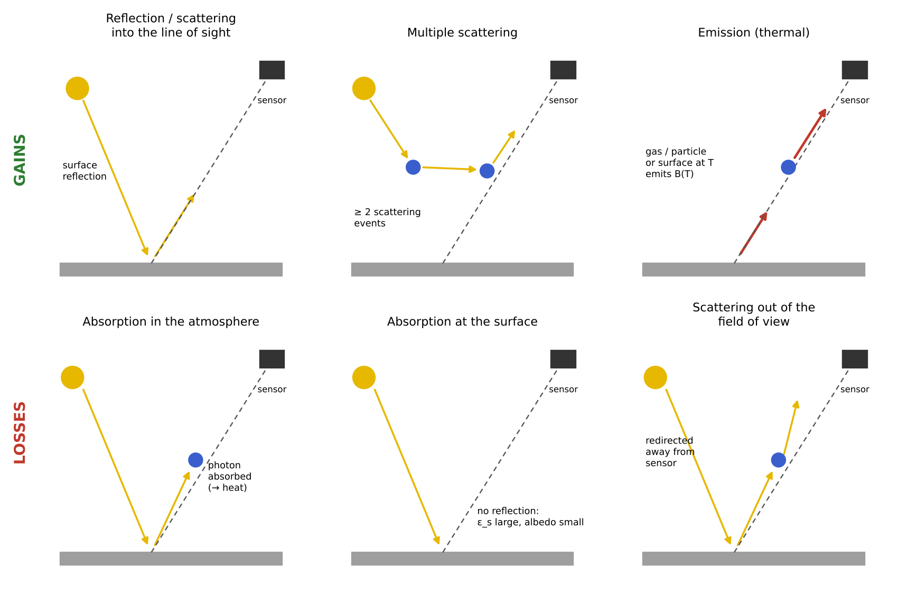
Figure 2 (study guide v2): gains (top) and losses (bottom) of photons along the line of sight.
Lecture photo: gains and losses
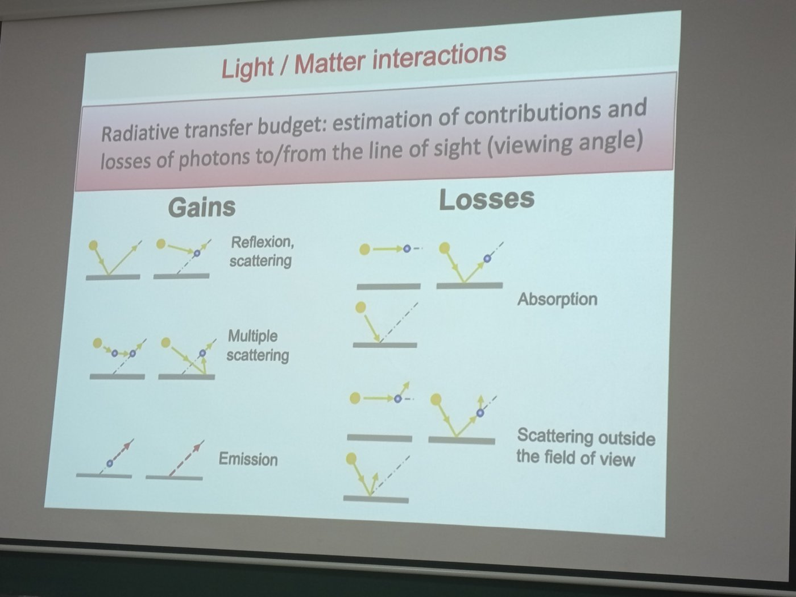
Lecture slide: light/matter interactions — radiative transfer budget.
A.3 A layer of gas without scattering
SourceJ = α · B(ν̃, T)
Integrated RTEI(L) = I(0)·e−τ(0,L) + ∫ B(T(l))·e−τ(l,L) dτ
SurfaceI(0) = εs·B(Ts) + (1 − εs)·Is
Integrated RTE for a gas layer
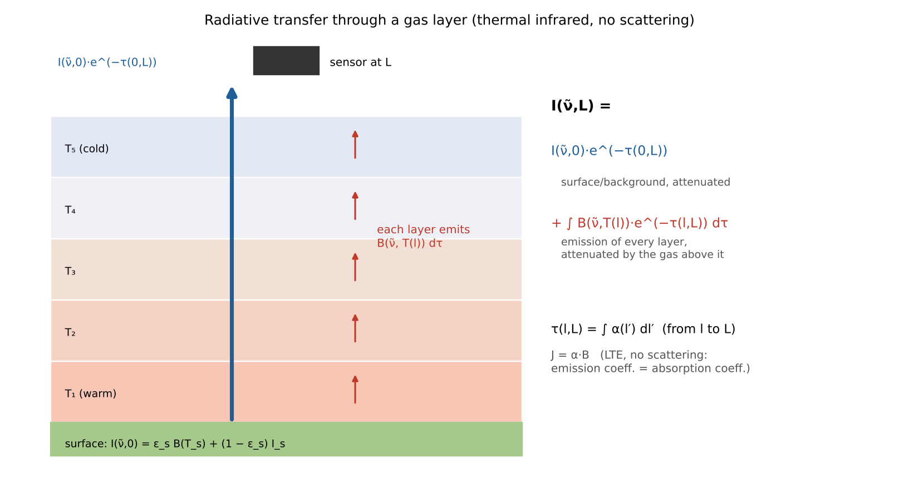
Figure 4 (study guide v2): attenuated background plus the emission of each layer.
Transparent gas (τ ≪ 1): I ≈ I(0) + τB. Opaque gas (τ ≫ 1): only the top layers are seen.
Lecture photo: gas layer (2/5)
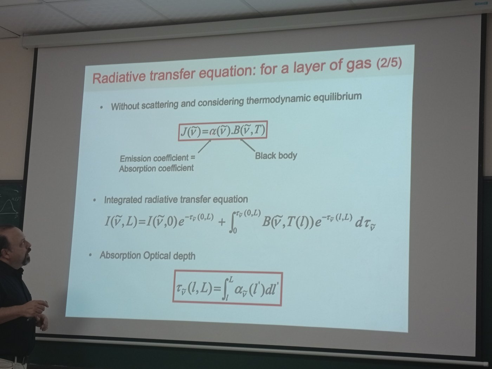
Lecture slide: radiative transfer equation for a layer of gas.
A.4 Optical depth
Continuous spectrumτ(L) = Σi ∫ σi(ν̃, P, T) · Ni(l) dl
Homogeneous layerτ = σ · N · L , t = e−τ
σ from spectroscopy (HITRAN), L from geometry — so measuring τ gives N, the goal.
Worked example: τ of a polluted NO₂ layer
N = 20 ppb × 2.5×1019 = 5e+11 cm−3
τ = σ′·L·N = 1.5×10−19 × 105 × 5×1011 = 0.0075
t = e−τ ≈ 99.3%
The NO₂ signature is below 1% of the signal: DOAS needs very high S/N and an accurate I0.
Lecture photos: optical depth and blackboard
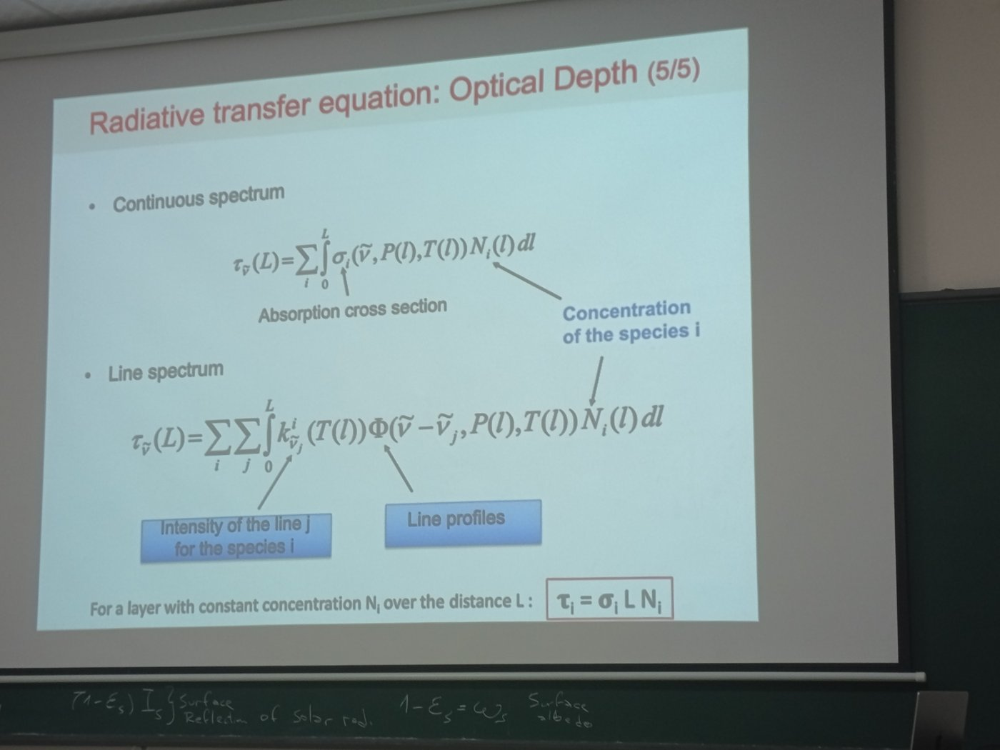
Optical depth (5/5).
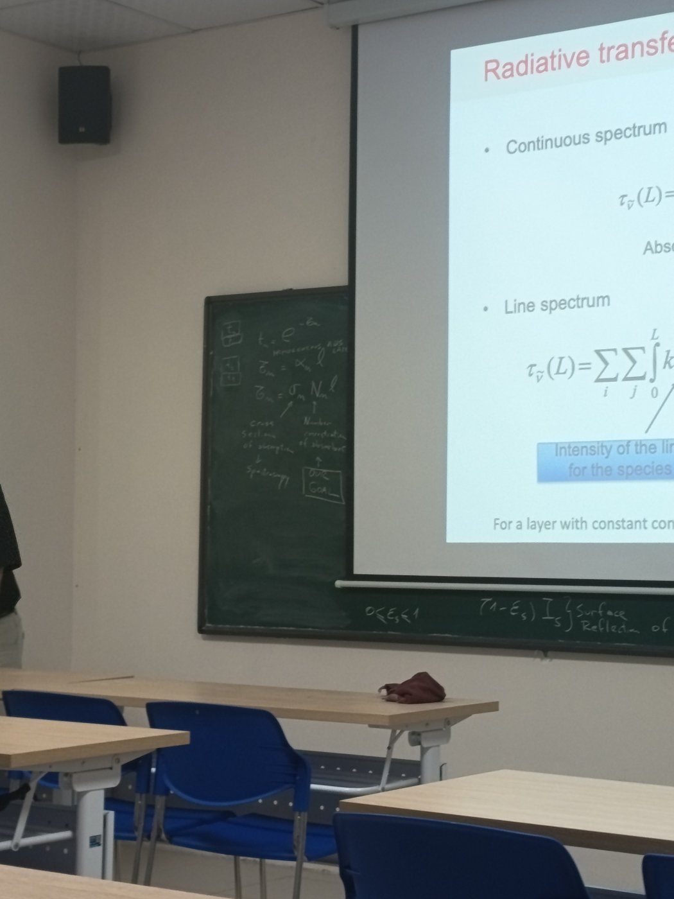
Blackboard: t = e^(−τ), τ = σ·N·l.
A.5 Line profiles vs altitude
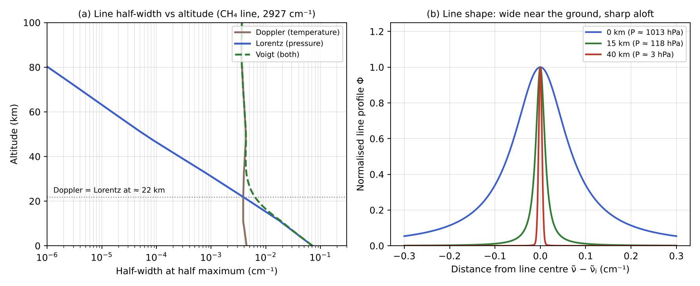
Figure 8 (study guide v2): computed Doppler, Lorentz and Voigt half-widths vs altitude, and line shapes at 0, 15 and 40 km.
HWHML ∝ P ; HWHMD ∝ ν̃√(T/m) ≈ 0.004 cm−1 (CH4)
Line widths: what to remember
| Altitude | Lorentz HWHM (cm⁻¹) | Doppler HWHM (cm⁻¹) | Dominant |
|---|---|---|---|
| 0 km | 0.071 | 0.0044 | Lorentz |
| 15 km | 0.0102 | 0.0039 | Lorentz |
| 40 km | 0.00026 | 0.0041 | Doppler |
Python, CH₄ at 2927 cm⁻¹, 7 km scale height. Crossover near 21 km; line centre ↔ high altitude, wings ↔ low altitude.
Lecture photo: line profiles
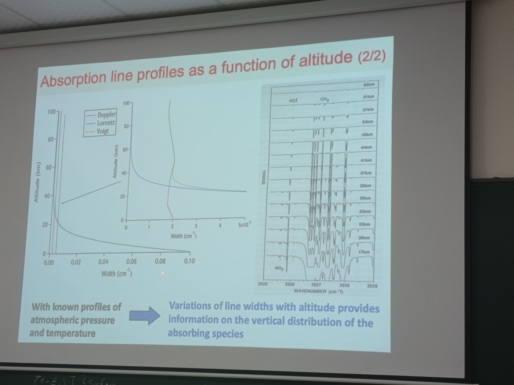
Lecture slide: absorption line profiles as a function of altitude, limb spectra for tangent heights 17–65 km.
A.6 DOAS: separating slow and fast structures

Figure 10: I₀, I′₀ and the differential absorption D.
σ = σb + σ′
D = ln(I′0/I) = σ′ · c · L
σ′ is the gas fingerprint; σb goes to the polynomial.
Lecture photo: DOAS
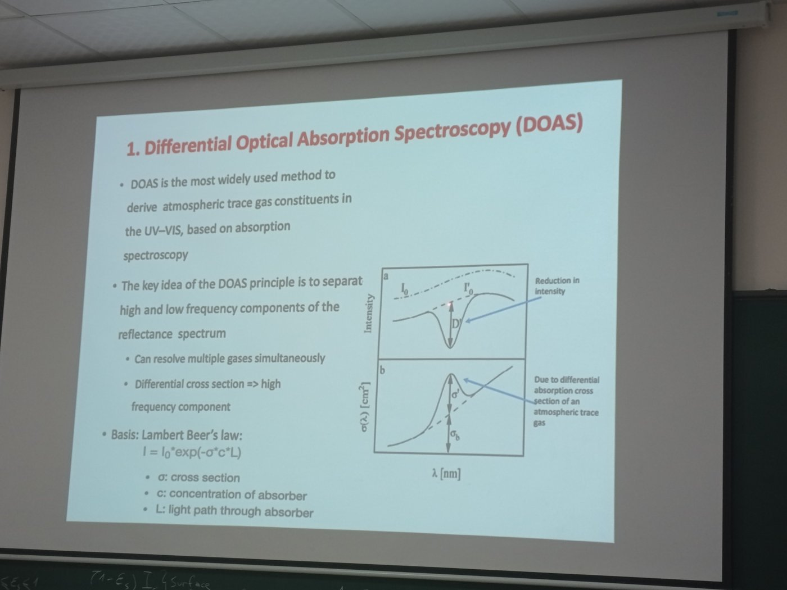
Lecture slide: Differential Optical Absorption Spectroscopy.
Exam checklist — Part A
1
RTE: dI/dl = −kextI + J; extinction = absorption + scattering; J = emission + scattering in
2
Gas layer: J = αB; I(L) = I(0)e−τ + ∫B e−τ(l,L)dτ; I(0) = εsB(Ts) + (1 − εs)Is
3
Optical depth τ = σNL; N is the goal
4
Line widths: Doppler (T), Lorentz (P); centre ↔ high, wings ↔ low; DOAS: σ = σb + σ′
Key points
- RTE is the photon bookkeeping: gains minus losses
- J = α·B(T) for a gas layer without scattering
- τ = σ·N·L: measure τ, get N
- Line widths and DOAS give vertical and column information